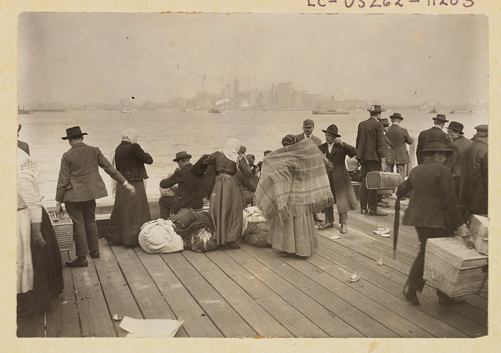
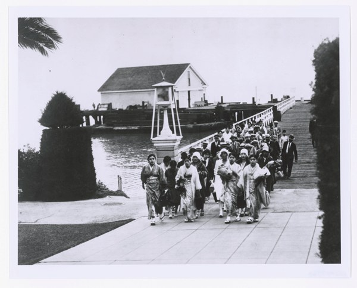
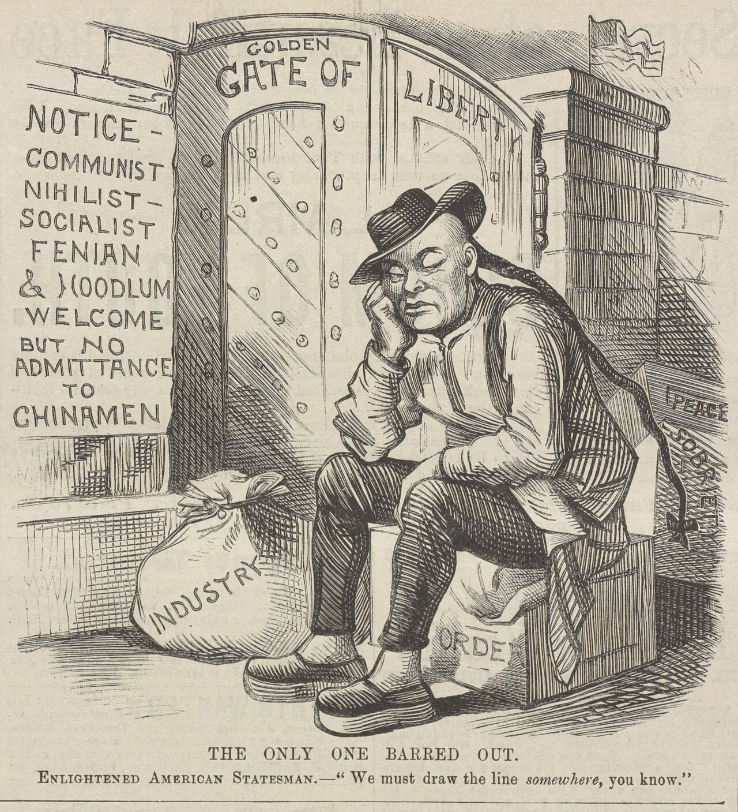

Directions: Your group starts at one station and records what that record can and cannot show. When the groups recombine, use all five stations to build one account of arrival that keeps four things separate: inspection, admission, exclusion, and daily settlement.
Source: Summary of the standard ship manifest form required of vessels arriving at United States ports after the Immigration Act of 1903, National Archives. The four entries below are composites built from the manifest's standard columns for this activity. They are not one real family.
Shipping companies filled out the manifest at the port of departure, before the ship sailed. For each steerage passenger the form recorded, among other items: name, age, sex, occupation, whether the passenger could read and write, nationality, last residence, destination in the United States, who paid for the passage, how much money the passenger carried, and the name and address of the relative or friend the passenger was going to join.
Composite entries, sailing from Naples to New York, 1907. Passenger A: male, 24, laborer, can read and write, last residence a farm village in Sicily, destination New York, passage paid by his brother, carries $12, joining his brother. Passenger B: female, 21, no occupation listed, cannot read, last residence the same village, destination New York, passage paid by her husband, carries $4, joining her husband. Passenger C: male, 38, shoemaker, can read and write, destination Pittsburgh, passage paid by himself, carries $30, joining a cousin. Passenger D: male, 16, laborer, can read, destination New York, passage paid by his father, carries $6, joining his father.
1. What could an inspector learn about a passenger from the manifest before asking a single question?
2. Which two entries look most at risk of being judged likely to become public charges, and what in their entries creates that risk?
Source: Description of the inspection process at Ellis Island, summarized from National Park Service accounts of the station's operation, with the photograph below.

Steerage passengers rode a ferry from the ship to the island. In the registry room, doctors watched each arrival climb a flight of stairs. Anyone who limped, coughed, breathed hard, or showed signs of illness received a chalk letter on the coat and was pulled aside for a closer examination. The first look took only seconds. Inspectors then called each name from the manifest, asked the standard questions through an interpreter when one was needed, and compared the answers with the manifest entry. Most arrivals finished in a few hours, collected their baggage, exchanged money, and bought railroad tickets or boarded the ferry to New York. About 2 percent were excluded and returned on the shipping company's ships.
1. Why did inspectors compare spoken answers with a document written in another country weeks earlier?
2. The photograph and the description both show a process built for speed. What evidence in the station supports that reading?
Source: Summary of poems brushed and carved on the detention barracks walls at Angel Island, drawn from the published translations in Island: Poetry and History of Chinese Immigrants on Angel Island, 1910 to 1940, by Him Mark Lai, Genny Lim, and Judy Yung (1980). The poems are summarized here rather than quoted.

Chinese detainees held at Angel Island wrote poems on the wooden walls of the men's barracks, in ink and carved into the wood. In the published translations, the poems return to a small set of subjects. The writer describes the ocean crossing and the disappointment of reaching the shore only to be locked in a wooden building. He records the strangeness of the food, the crowding, and the boredom of weeks spent waiting without word. Several poems express anger at the exclusion laws and at officials, and shame at the thought of going home having failed. Others end with a resolve to endure the questioning and enter the country. Officials painted over the walls more than once. Detainees kept writing, and more than a hundred poems survived to be copied, photographed, and translated.
1. What does the summary tell you about detention that an inspection description like Station 2 cannot?
2. Why would detainees write on the walls when officials painted the writing over?
Source: "The Only One Barred Out," Frank Leslie's Illustrated Newspaper, April 1, 1882, weeks before Congress passed the Chinese Exclusion Act. Library of Congress.

1. What argument does the cartoon make about who was being excluded in 1882 and who was being let in?
2. This cartoon criticizes exclusion. What group does it still treat as the standard for who should be admitted, and what does that show about the limits of the criticism?
Source: Settlement summary drawn from the 1900 census pattern of the foreign born, with the photograph below.

Read this station as a map in words. In 1900 the foreign born were concentrated in the industrial belt from New England through the Great Lakes. New York City held the largest immigrant population in the country, with Italians, Russian Jews, Germans, and Irish in distinct neighborhoods, often organized by village of origin down to the block. Chicago drew Poles, Czechs, and Germans to its stockyards and mills. Mining regions in Pennsylvania and the upper Midwest drew Slovaks, Poles, Finns, and Cornish miners. On the West Coast, Chinese and Japanese communities centered on San Francisco and the farming valleys of California, in the face of the exclusion laws. Across the South, foreign born residents were few outside ports such as New Orleans and Galveston. Settlement followed jobs, rail lines, and the relatives who had arrived first.
1. Name two forces that decided where a new immigrant settled, and cite one detail from the station for each.
2. What could a settlement map like this one never show about immigrant life?
With your recombined group, sort the evidence. For each of the four parts of arrival, write the station number that tells you the most about it, and one fact from that station.
Inspection: Station ______ Fact: ______________________________________________
Admission: Station ______ Fact: ______________________________________________
Exclusion: Station ______ Fact: ______________________________________________
Daily settlement: Station ______ Fact: ______________________________________________
Now write the group's account. In one paragraph, explain how the United States decided who belonged between 1882 and 1924. Your account must use at least one fact about inspection, one about exclusion, and one about settlement, and it must name the station each fact came from.
1. What could an inspector learn about a passenger from the manifest before asking a single question? Name, age, sex, occupation, literacy, nationality, last residence, destination, who paid for the passage, money carried, and the relative or friend being joined. The manifest also explains why the legal inspection could be fast: the answers already existed on paper, so the inspector was checking a story against a record rather than building one.
2. Which two entries look most at risk of being judged likely to become public charges, and what in their entries creates that risk? Passenger B ($4, no occupation listed, cannot read) and Passenger D ($6, age 16), with A ($12) also defensible if argued from the money column. The counterweight students should notice is the joining column: each of the four is joining a relative already in the country, which was evidence of support. Risk came from low cash, no listed trade, and dependence, judged against that support.
1. Why did inspectors compare spoken answers with a document written in another country weeks earlier? The manifest was made at departure from the passenger's own statements and papers, before the passenger knew the inspection questions. A mismatch suggested a false identity or a story invented for the crossing. A match was evidence the person was who the record said.
2. The photograph and the description both show a process built for speed. What evidence in the station supports that reading? The seconds long first medical look on the stairs, the chalk system for pulling aside only the doubtful cases, the standard question set, crowds with baggage waiting to be transferred rather than housed, and the outcome figure: most finished in a few hours and about 2 percent were excluded.
1. What does the summary tell you about detention that an inspection description like Station 2 cannot? Duration and experience from inside: weeks of waiting without word, crowding, strange food, boredom, anger at the laws, and shame at the thought of returning home having failed. The inspection description reports procedure. The wall poems report what the procedure felt like and what it cost.
2. Why would detainees write on the walls when officials painted the writing over? Accept reasoned answers grounded in the station: to leave a record for the next detainees, to protest, to pass the time, and because writing was one act officials could not fully control. The survival of more than a hundred poems, copied and photographed before translation, shows the record outlasted the paint.
1. What argument does the cartoon make about who was being excluded in 1882 and who was being let in? The one man barred at the Golden Gate of Liberty is the Chinese arrival, whose baggage is labeled with virtues: Industry, Order, Peace, and Sobriety. The sign welcomes categories the cartoon's readers were meant to fear, communists, nihilists, socialists, Fenians, and hoodlums. The caption has the statesman concede the arbitrariness: a line had to be drawn somewhere. The argument is that exclusion singled out the Chinese for reasons other than the danger or worth of the people excluded.
2. This cartoon criticizes exclusion. What group does it still treat as the standard for who should be admitted, and what does that show about the limits of the criticism? The cartoon defends the Chinese arrival by measuring him against the supposedly dangerous Europeans on the sign, which it leaves in place as genuinely undesirable. Its case is that this man deserves admission, not that the gate itself is wrong. Criticism of one exclusion could coexist with support for excluding others, which is part of how restriction widened in later decades.
1. Name two forces that decided where a new immigrant settled, and cite one detail from the station for each. Any two. Jobs: settlement concentrated in the industrial belt and followed stockyards, mills, and mines. Chain migration and relatives: neighborhoods organized by village of origin down to the block, and settlement following the relatives who arrived first. Transport: settlement followed rail lines. Law: West Coast Asian communities centered where they did in the face of exclusion laws.
2. What could a settlement map like this one never show about immigrant life? Anything inside the neighborhood: language kept or lost, work conditions, worship, family strain, return migration, or how residents were treated by neighbors and officials. The map shows distribution, not experience. Strong answers connect this to Station 3, which supplies experience without distribution.
The sorting lines: inspection, Station 2 (Station 1 also acceptable, since the manifest was the inspection's main tool); admission, Station 2; exclusion, Station 4 (Station 3 also acceptable); daily settlement, Station 5.
Full credit should be awarded if the student: